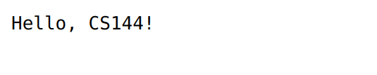
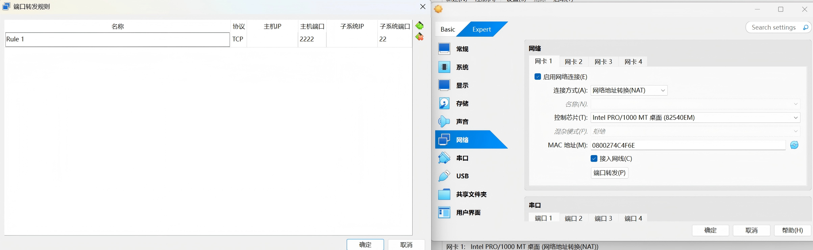

Lab 2 Webget 与字节流（ByteStream）
注意
实验报告提交 DDL 为 2026 年 10 月 11 日 23:59，请同学们留意。
提交作业时请同时提交实验报告和源代码。
说明
Lab 2–5 的实验内容与 CS144 对齐，我们将在这些实验中实现一个完整的 TCP/IP 协议栈。
1 环境配置
为避免不必要的环境问题，建议使用虚拟机，并基于 CS144 官方提供的镜像完成实验。
1.1 安装 VirtualBox 并下载虚拟机镜像
VirtualBox：https://www.oracle.com/cn/virtualization/virtualbox/
虚拟机镜像：https://stanford.edu/class/cs144/vm_files/cs144-fall-2026-x86.ova（文件较大，建议预留 1～2 小时下载）

注意
如果你使用配备 Apple Silicon（M 系列芯片）的 MacBook，VirtualBox 可能无法正常运行。请按照课程官方建议，使用 UTM 和 ARM64 虚拟机镜像。
ARM64 虚拟机镜像：https://web.stanford.edu/class/cs144/vm_files/cs144-2026-arm.utm.tar.gz
1.2 导入 CS144 镜像
启动 VirtualBox，你会看到如下界面：

单击“导入”，打开如下窗口。选择已经下载的 cs144_vm.ova 镜像文件。无需修改默认设置，单击“完成”导入镜像。

在左侧选择刚刚导入的虚拟机，然后单击“启动”。

虚拟机会启动至文本界面，用户名和默认密码均为 cs144。
1.3 连接虚拟机
建议通过 SSH 连接虚拟机，并使用 VS Code 进行远程编辑。CS144 镜像已经配置端口转发：主机的 localhost:2222 会被转发到虚拟机的 22 号端口（SSH）。虚拟机启动后，可运行以下命令连接。若连接失败，请参考文末的注意事项。
ssh -p 2222 cs144@localhost
1.4 安装所需软件包
以下命令将安装实验所需的软件包：
sudo apt update && sudo apt install git cmake gdb build-essential clang \
clang-tidy clang-format gcc-doc pkg-config glibc-doc tcpdump tshark libpcap-dev
2 使用网络
在开始编码之前，我们先使用应用层程序访问一个网页。
2.1 使用浏览器访问网页
使用浏览器访问 http://cs144.keithw.org/hello，你将看到如下结果。浏览器是典型的应用层程序，它会构造符合 HTTP 协议的请求并发送给服务器，再解析并呈现服务器返回的响应。


2.2 使用 Telnet 获取网页
Telnet 也是一种应用层程序。与浏览器不同，使用 Telnet 连接服务器时，需要手动输入 HTTP 请求报文。
-
在虚拟机中运行
telnet cs144.keithw.org http [Enter]。该命令会通过 HTTP 服务端口与cs144.keithw.org建立可靠的字节流连接。如果虚拟机配置正确且网络连接正常，你将看到以下输出：按住$ telnet cs144.keithw.org http Trying 104.196.238.229... Connected to cs144.keithw.org. Escape character is '^]'.Ctrl并按下]，然后输入close退出连接。 -
输入
GET /hello HTTP/1.1 [Enter]，指定请求的 URL 路径。 - 输入
Host: cs144.keithw.org [Enter]，指定请求的主机。 - 输入
Connection: close [Enter]，告知服务器在响应后关闭连接。 - 再按一次
[Enter]，发送一个空行以结束请求头。
注意
输入上述内容时请尽量迅速，否则连接可能因超时而断开。
操作成功后，你将看到与浏览器所显示内容相同的响应。
GET /hello HTTP/1.1
Host: cs144.keithw.org
Connection: close
HTTP/1.1 200 OK
Date: Thu, ...
Server: Apache
Last-Modified: Thu, 13 Dec 2018 15:45:29 GMT
ETag: "e-57ce93446cb64"
Accept-Ranges: bytes
Content-Length: 14
Connection: close
Content-Type: text/plain
Hello, CS144!
Connection closed by foreign host.
3 Webget
对比上述两个应用层程序可以发现，它们都建立在 socket 之上。Socket（套接字）是操作系统向应用程序提供的网络通信接口，它对 TCP、UDP 等传输层协议进行了抽象封装。应用程序通过 socket 建立连接并收发数据。本节将编写一个简短的应用层程序 webget，通过 Linux 内核提供的 stream socket 接口获取网页内容。
3.1 建立仓库
- 在虚拟机中输入
git clone https://github.com/ZJU-Zhiyi/zju-comnet-labs-2026.git [Enter]，克隆实验初始代码。 - 输入
cd zju-comnet-labs-2026 [Enter]进入项目目录。 - 输入
mkdir build [Enter]创建build目录。 - 输入
cd build [Enter]进入build目录。 - 输入
cmake .. [Enter]配置项目。 - 输入
make [Enter]编译项目。每次修改代码后，都需要重新运行make。
提示
由于通过 HTTPS 访问 GitHub 时可能不稳定，建议使用 SSH 管理 Git 仓库。配置方法可参考 https://zhuanlan.zhihu.com/p/628727065。
3.2 OS Stream Socket
在 Linux 中，stream socket 以文件描述符的形式供程序使用。两个 stream socket 建立连接后，写入一端的字节最终会按相同顺序从另一端读出。下图展示了基于 TCP/IP 协议的客户端—服务器通信流程。

-
服务器端负责等待连接并提供服务：
socket：创建套接字，即网络通信的端点。bind：将套接字绑定到本地地址（IP 地址和端口号）。listen：使套接字进入监听状态，等待客户端的连接请求。accept：阻塞并等待客户端连接。收到连接请求后，创建一个新的套接字与该客户端通信。while (true)：服务器通常会循环调用accept，持续等待并处理新的客户端连接。read/write：通过已经连接的套接字收发数据。close：关闭与当前客户端通信的套接字。
-
客户端负责发起连接并请求服务：
socket：创建套接字。connect：向服务器的指定地址和端口发起连接。连接成功后，即可开始传输数据。write/read：通过已经建立的连接向服务器发送数据，或读取服务器返回的数据。read EOF：客户端读取到文件结束标志，表示服务器已经关闭连接或关闭写入方向。close：关闭套接字，终止与服务器的连接。
3.3 实现 webget
请阅读 libsponge/util/socket.hh 和 libsponge/util/file_descriptor.hh 中的公开接口。注意，Socket 继承自 FileDescriptor，TCPSocket 继承自 Socket。请熟悉这些接口的定义和调用方法。
接下来，你将调用 TCPSocket 的接口实现应用层程序 webget。其功能与前面的 Telnet 类似，用于获取网页内容。
-
在编辑器中打开
/path/to/zju-comnet-labs-2026/apps/webget.cc。 -
使用
TCPSocket和Address类完成get_URL函数。你需要通过 socket 建立连接，按照 HTTP 格式发送请求，并读取服务器返回的全部数据。注意
-
在 HTTP 中，每行必须以
\r\n结尾。 -
客户端请求中必须包含
Connection: close请求头。 -
持续读取并输出服务器响应，直到套接字到达 EOF。
-
-
重新运行
make编译项目。 -
运行
/path/to/zju-comnet-labs-2026/build/apps/webget cs144.keithw.org /hello [Enter]测试程序。 -
如果输出符合预期，可运行
make check_webget [Enter]进行自动测试。测试脚本位于/path/to/zju-comnet-labs-2026/tests/webget_t.sh。注意
如果测试超时，请检查网络、DNS、代理或 VPN 设置。
完成 get_URL 函数后，运行测试将看到类似以下结果：
$ make check_webget
[100%] Testing webget...
Test project /path/to/zju-comnet-labs-2026/build
Start 31: t_webget
1/1 Test #31: t_webget ......................... Passed 1.19 sec
100% tests passed, 0 tests failed out of 1
Total Test time (real) = 1.19 sec
[100%] Built target check_webget
4 可靠的字节流
在上一节中，我们调用 socket 接口完成了简易的 webget 应用程序。本节将实现一个简化的 socket 读写缓冲区（ByteStream）。如下图所示，建立连接后，TCP 会维护发送（send）和接收（recv）两个缓冲区。以接收缓冲区为例，客户端发送的数据会依次写入缓冲区，服务器则可以按需读取。

你将自己实现一个字节流。字节从“输入”端写入，并按照相同顺序从“输出”端读出。writer 可以结束输入，此后不得再写入任何字节；reader 读到流末尾时会遇到 EOF（end of file），此后不会再读到任何字节。
字节流还需要进行容量控制。构造字节流时会指定容量（capacity），即缓冲区最多能够保存的字节数。缓冲区写满后，writer 必须停止写入；当 reader 读出字节并释放空间后，writer 才能继续写入。
打开 libsponge/byte_stream.hh 和 libsponge/byte_stream.cc，设计所需的私有成员并完成接口实现。接口可以分为以下四类：
- 构造函数
ByteStream(const size_t capacity); // 初始化自行设计的私有成员 - Writer
size_t write(const std::string &data); // 将 data 中尽可能多的字节写入 stream，返回实际写入的字节数 size_t remaining_capacity() const; // 返回 stream 的剩余容量 void end_input(); // 标记输入结束，此后不再接受新的写入 void set_error() { _error = true; } // 将错误标志 _error 设为 true - Reader
std::string peek_output(const size_t len) const; // 返回接下来至多 len 个字节，但不移除它们 void pop_output(const size_t len); // 从 stream 中移除至多 len 个字节 std::string read(const size_t len); // 读取至多 len 个字节，即先 peek 再 pop bool input_ended() const; // 输入结束时返回 true bool error() const { return _error; } // stream 发生错误时返回 true size_t buffer_size() const; // 返回当前可读取的字节数 bool buffer_empty() const; // 缓冲区为空时返回 true bool eof() const; // 输入结束且缓冲区为空时返回 true - General Accounting
size_t bytes_written() const; // 返回累计成功写入的字节数 size_t bytes_read() const; // 返回累计从 stream 中移除的字节数
完成实现并重新编译项目后，可运行 make check_lab0 [Enter] 进行自动测试。若实现正确，你将看到类似以下结果：
$ make check_lab0
[100%] Testing Lab 0...
Test project /path/to/zju-comnet-labs-2026/build
Start 26: t_byte_stream_construction
1/9 Test #26: t_byte_stream_construction ....... Passed 0.00 sec
Start 27: t_byte_stream_one_write
2/9 Test #27: t_byte_stream_one_write .......... Passed 0.00 sec
Start 28: t_byte_stream_two_writes
3/9 Test #28: t_byte_stream_two_writes ......... Passed 0.00 sec
Start 29: t_byte_stream_capacity
4/9 Test #29: t_byte_stream_capacity ........... Passed 0.25 sec
Start 30: t_byte_stream_many_writes
5/9 Test #30: t_byte_stream_many_writes ........ Passed 0.00 sec
Start 31: t_webget
6/9 Test #31: t_webget ......................... Passed 1.09 sec
Start 53: t_address_dt
7/9 Test #53: t_address_dt ..................... Passed 0.01 sec
Start 54: t_parser_dt
8/9 Test #54: t_parser_dt ...................... Passed 0.00 sec
Start 55: t_socket_dt
9/9 Test #55: t_socket_dt ...................... Passed 0.00 sec
100% tests passed, 0 tests failed out of 9
Total Test time (real) = 1.38 sec
[100%] Built target check_lab0
提示
如果仍不清楚接口的实现逻辑，可以阅读测试用例以加深理解：
/path/to/zju-comnet-labs-2026/tests/下的byte_stream_test_harness.hh和byte_stream_test_harness.cc包含测试辅助类的声明与实现。/path/to/zju-comnet-labs-2026/tests/byte_stream_*.cc是具体测试用例。
注意
- 如果无法通过 SSH 连接虚拟机，并出现
Connection Refused提示，可以在 VirtualBox 的虚拟机设置中手动添加端口转发规则，如下图所示。
- 如果你使用的是 MacBook，并且在 UTM 中找不到端口转发选项，可以在设置中将网络模式调整为“模拟 VLAN”。